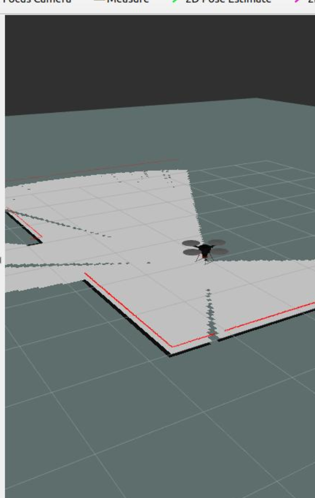

About Me 😊
I am an Robotics Software Engineer & ML/DL Engineer | Passionate about ROS2,Perception , robotics algorithms, deep learning, machine learning, and reinforcement learning | Building autonomous systems and AI-driven robots | Open to opportunities in robotics and AI.
Check out my project blew
Projects 🚀
Maze Solving and Path planning for end-effector of MyCobot Pro 600

Implemented a path planning algorithm for the MyCobot Pro 600 to solve mazes and navigate efficiently.
View Project on GitHubAutonomous Mobile Robot for Indoor Navigation

Used Fusion360 to Designed and developed an autonomous mobile robot in ROS2 and Implemented SLAM for indoor navigation.
View Project on GitHubStitched Fabric Defect Detection using a Real-Robotic Arm

3D printed a robotic arm vision system to detect defects in stitched fabric.
Fine-tuning YoloV5 for Stitched Fabric Defect Detection.

Developed ROS2 packages for custom robotic arm and Fine-tuned the YOLOv5 model for precise defect detection on stitched fabric datasets. got about 80% accuracy
View Project on GitHub2D navigation for Hector-quadrotor drone in ROS and S500 Drone Building
Implemented 2D navigation for Hector-Quadrotor in ROS and constructed the S500 drone and done a testing flight.
View Project on GitHubContact
Email: prithvijai0510@gmail.com
LinkedIn: prithvi-jai-ramesh